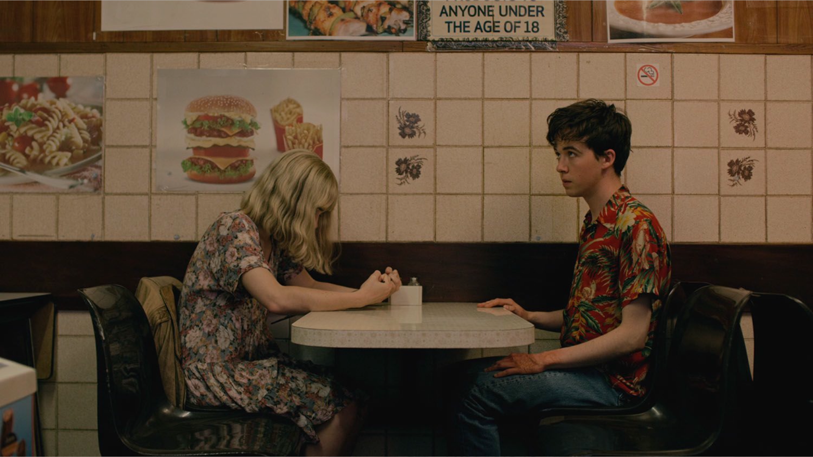
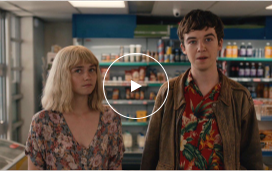
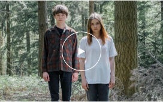
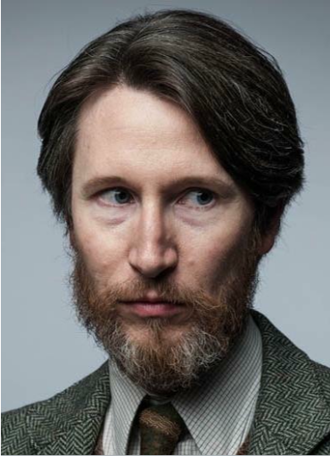
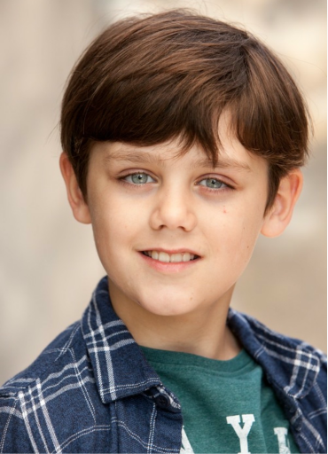
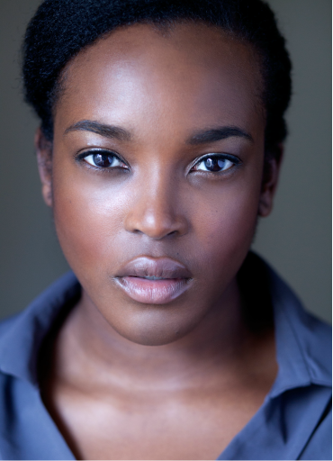

DECEMBER 12
THE END OF
THE FREAKING WORLD
Directed by Entwistle and Lucy Tcherniak, and written by
Charlie Covell, the rest of TEOTFW's lean eight-episode
run hews to the thrust of Forsman's book, giving James and
Alyssa no dearth of obstacles.


Premise
James is a 17-year-old who believes he is a psychopath. He kills animals as a hobby, but grows bored of the
practice. He decides he wants to try killing a human. He settles on Alyssa; a mouthy, rebellious 17-year-old
classmate with issues of her own. She proposes they run away together, hoping for an adventure away from
her turbulent home-life, and James agrees with the intention of finding an opportunity to kill her. They
embark on a road trip across England, and begin to develop a relationship after a series of mishaps.
However in series 2 they grow distant and Alyssa proposes to another man. But someone thirsty for revenge
for what they did hunts them down, bringing them together once again....
With their newfound freedom, Alyssa and James play laser tag but end up having to dine and dash at a
restaurant after realising they have spent all their money. Alyssa suggests they attempt to have sex while
driving, but while getting undressed they swerve off the road and crash into a tree. They hitchhike in the
van of Martin, a middle-aged man to whom Alyssa quickly dislikes. While in the toilets of the restaurant
they have stopped at for food, Martin follows James and asks about his burnt hand, before smelling it and
putting it on his crotch; James is submissive, despite being disgusted by it. Alyssa sees this and blackmails
Martin into giving her his wallet. After booking a hotel room, Alyssa goes to the bathroom and cries, while
James waits with his knife by the door, hesitantly. He softens when he hears her crying and puts his knife
away; Alyssa calls home and her stepfather Tony answers. He denies her request to speak to her mother,
Gwen, implying his dominance over her mother. Alyssa asks James whether he wants her or just goes
along with her; he replies that he wants her. She decides to go see her father, Leslie, whom she has not
seen since she was 8 years old; James agrees to join her.

Awards & Festival
Cannes Film Festival
2019
Academy Honorary
2016
Memorial Award
2019
Humanitarian Award
2017
Award of Meritocracy
2019
Board of Governors
2020
The Best Picture
2016
Emmys Film Festival
2018
Melrosity Avenue
2019
Best Costume Design
2017
Cast & Crew
Jessica Barden
Cast / Alyssa

Alex Lawther
Cast / James
Naomi Ackie
Cast / Bonnie

Jonathan Aris
Cast / Professror Clive Koch

Jack Veal
Cast / Young James

Wunmi Mosaku
Cast / DC Teri Darego
Comment
Jordan Williams
A great concept and a good setup should have delivered a more transcendent film in this directors capable hands dealing with the theme of
the decay and fade of beauty and life. Instead it all feels a bit clunky and heavy handed with visual metaphors feeling artificial and the pace
felt a little off as well. 3 stars
reply
Bernadette
4.5 Je pense que c'est mon film préféré de Kawase, jusqu'à présent. Les choses que j'aime le plus dans ce monde sont les films et les bandes
dessinées, donc la perte de la vue est l'une de mes plus grandes peurs. Le portrait de Nagase est plein de pathétique et m'a vraiment
profondément.
reply
Boryenka
Фильм, который попадает прямо в сердце. Я фотограф по жизни, и это заставило меня еще больше отождествить себяс главным героем.
Финальная часть фильма была для меня несколько очевидна, но я никогда не видел фильма,посвященного такой теме.
Слезы гарантированы.
reply
Jordan Williams
最初の部分は、感情の伝達と映画のテキストの意味の保存について質問する際に、より良く、まとまりがあります。2つ目は弱く、
答えを出すのは楽観的すぎました。